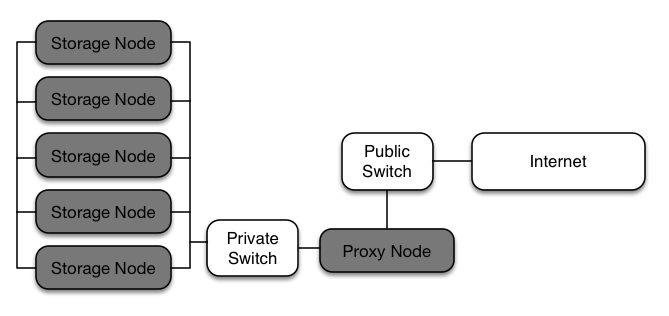

Example Object Storage installation architecture#
This section provides an example Object Storage installation architecture. For more information about the Object Storage constructs, see the definitions for the components.
The following diagram shows one possible configuration for a minimal installation. In this example, each storage node is a separate zone in the ring. At a minimum, five zones are recommended. To increase reliability and performance, additional proxy nodes can be added.
